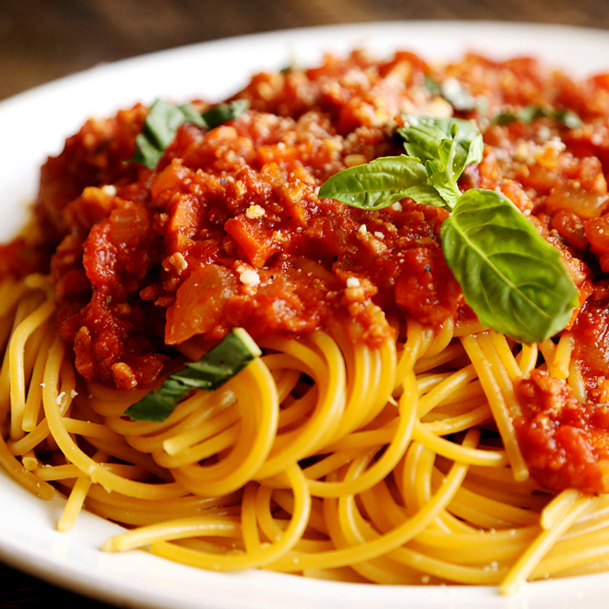

Anthony Graziano's Penne Alla Vodka

Description
Anthony Graziano was a less well-known mobster that worked for the Bonanno crime family. His daughters made a
career on the show Mob Wives and have published a family cook book.
Ingredients
- 1 lb. penne
- 3 tbsp. olive oil
- 1 large onion, chopped
- Salt and pepper
- 1/2 tsp. crushed red pepper flakes
- 2 (28 oz.) cans San Marzano crushed tomatoes
- 1/4 cup of vodka
- 1/2 cup heavy cream
- 1 tbsp. butter
- 1 cup grated Parmigiano-Reggiano cheese
Steps
- Bring a large pot of water to a boil
- Cook penne according to package instructions
- Drain the penne and set aside
- In a large saucepan over medium-high heat, heat olive oil and sauté the onion and garlic
- Season with salt, pepper and crushed red pepper
- Cook, stirring occasionally, until the onion is soft, about 10 minutes.
- Add the tomatoes. Bring to a boil, reduce heat and simmer
- Stir occasionally for another 40 minutes.
- Add the vodka to the tomato mixture and continue cooking another 10 to 15 minutes
- Stir in the cream and the butter and cook for 10 more minutes
- Turn off the heat
- In a pasta bowl, add 2 cups sauce and toss with the pasta and ¾ cups grated cheese
- Sprinkle with remaining cheese